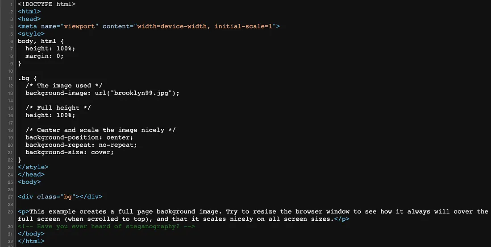

Introduction
This report details the penetration testing process for the "Brooklyn Nine Nine" machine on TryHackMe. This Linux target is rated **Medium** and requires solving a **steganography challenge** to obtain initial user credentials, followed by exploiting an allowed **sudo command** (`nano`) for privilege escalation to root. The machine IP used was 10.10.115.97.

The Brooklyn Nine Nine machine overview from TryHackMe.
1. Initial Enumeration
We begin by quickly discovering all open TCP ports using a fast port scanner like **Masscan**.
Port Discovery (Masscan)
Masscan is significantly faster than a full Nmap scan and helps quickly narrow down the ports we need to examine further.
masscan -p- --rate 10000 10.10.115.97
Masscan successfully identifies open ports **21 (FTP), 22 (SSH), and 80 (HTTP)**.
Service Enumeration (Nmap)
Next, we confirm the services and versions running on the discovered ports using Nmap's more detailed scan features.
nmap -p21,22,80 -Pn -sV 10.10.115.97
Nmap confirms services are running: **vsftpd 3.0.3**, **OpenSSH 7.6p1**, and **Apache httpd 2.4.29**.
Web Service Examination
Navigating to the web service on port 80 reveals a basic page featuring the show's cast . Inspecting the page's source code reveals a crucial hint.

The source code contains the comment: <!-- Have you ever heard of steganography? -->.

The main image on the webpage, which is the target for steganography.
2. Gaining Initial Access (Steganography)
The comment points to **steganography**, the practice of concealing data within another file. The primary file visible on the web page is brooklyn99.jpg.
Downloading the Image
We download the image locally to analyze it for hidden data.
wget http://10.10.115.97/brooklyn99.jpg
Successfully downloading the `brooklyn99.jpg` image.
Steganography Cracking with Stegseek
We use the highly efficient tool **Stegseek** in combination with the large `rockyou.txt` wordlist to automatically check for embedded files secured with a password inside the image.
stegseek brooklyn99.jpg /usr/share/wordlists/rockyou.txt
Stegseek successfully extracts a hidden file (`note.txt`) and finds the passphrase.
Retrieving Credentials
Stegseek extracts a hidden file (`brooklyn99.jpg.out`), which we can read to find the credentials.
cat brooklyn99.jpg.out
The extracted file reveals the password for user **Holt**.
3. User Flag Acquisition
With the credentials for user `holt`, we attempt to access the machine via SSH (Port 22).
SSH Access
ssh holt@10.10.115.97
Successful SSH access is granted using the retrieved credentials.
User Flag Capture
The user flag is typically located in the user's home directory.
cat /home/holt/user.txtThe user flag is successfully retrieved.
4. Privilege Escalation
To gain root access, we check the user's `sudo` privileges using `sudo -l` to find misconfigurations that allow running commands as root.
Sudo Privilege Check
sudo -l
The output shows that user `holt` can run the **/usr/bin/nano** command as root without a password.
Exploiting Sudo Nano (GTFOBins)
We leverage the misconfiguration of allowing `sudo nano` by following the exploit steps documented on **GTFOBins** to escape the editor and gain a root shell.
sudo nanoOnce inside the nano interface, the exploit sequence is as follows:
- Press **Ctrl+R** (Read file). This opens the 'File to insert' prompt.

The nano interface after pressing Ctrl+R.
- Press **Ctrl+X** (Execute command). This changes the prompt to 'Command to execute:'.

Changing the prompt to 'Execute Command' by pressing Ctrl+X.
- Type the shell command:
reset; sh 1>&0 2>&0. This spawns a new shell.
The shell command
reset; sh 1>&0 2>&0is entered to escalate privileges. - Press **Enter** until the root shell is fully active.

A successful root shell is obtained, confirmed by the `id` command (uid=0(root)).
5. Root Flag Acquisition
Now operating as root, we can easily read the final flag from the `/root` directory.
cat /root/root.txtThe root flag is captured, completing the machine.
6. Conclusion
The "Brooklyn Nine Nine" machine was a fun and engaging challenge, providing a great opportunity to practice two distinct penetration testing techniques. The initial access relied on identifying and exploiting a vulnerability via **steganography** using `Stegseek`, a unique approach often seen in Capture The Flag (CTF) environments. The root access demonstrated a classic **privilege escalation** vector by misusing a highly privileged `sudo` command (`nano`) via documented methods in GTFOBins. This machine serves as a great reminder to check file metadata for hidden information and to strictly enforce the principle of least privilege, especially for binaries executable via `sudo`.
Nine-Nine!